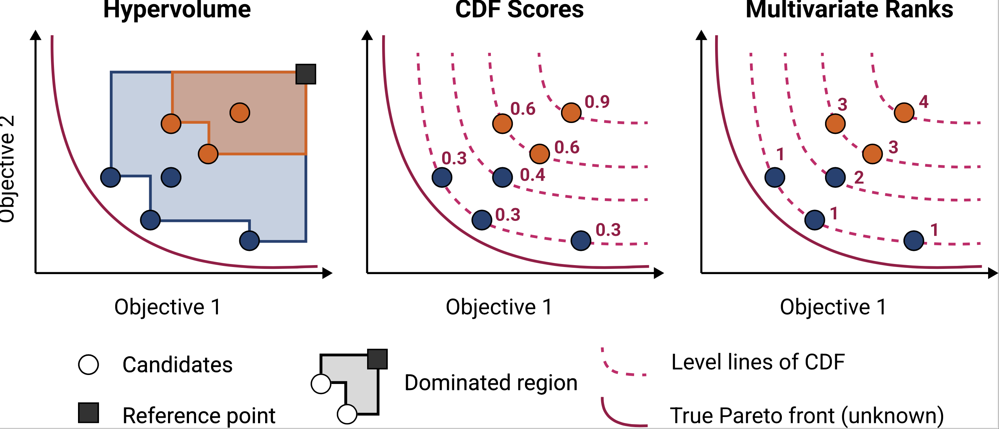
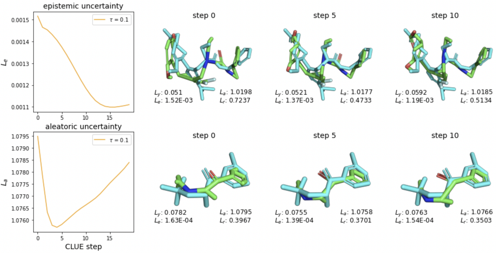
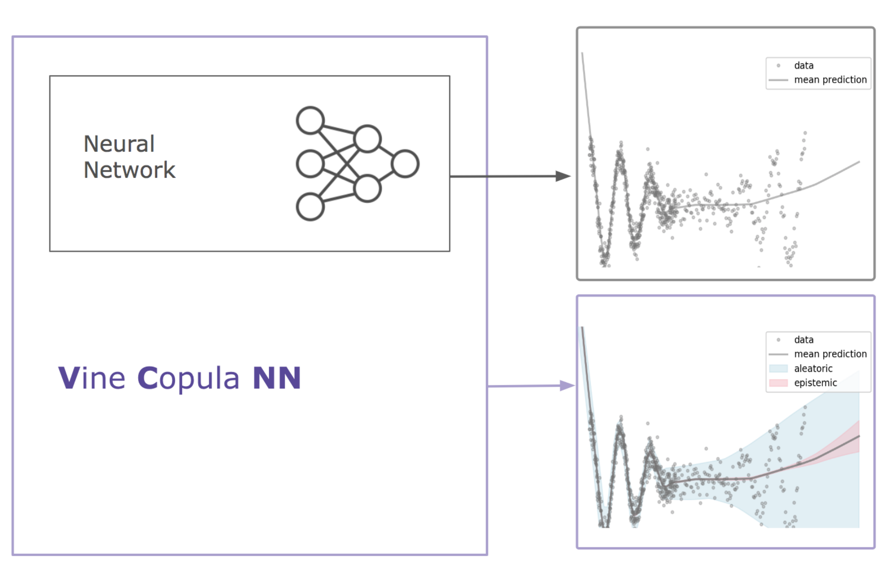
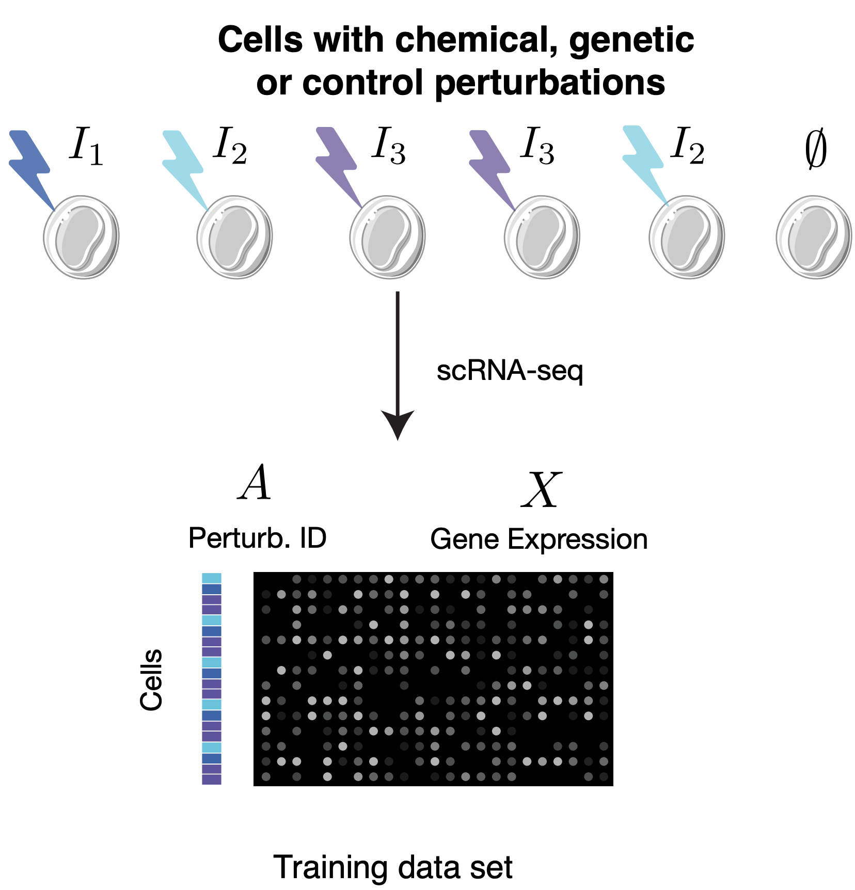

|
Nataša Tagasovska I'm a Principal Machine Learning Scientist and Scientific Manager at Prescient Design, Genentech in the Frontier Research team. My interests have always revolved around ML methods for causal learning and uncertainty estimation, and recently I get to explore their capabilities within applications in computational biology. Prior to Prescient, I was a Sr. Data Scientist at the SDSC at EPFL-ETHZ, where I worked on interdisciplinary projects, applying ML to physical and social science research efforts. I hold a PhD in Information Systems (Data Analytics track) from University of Lausanne and a BS and MSC in Computer Science and Engineering. During my studies I interned at Facebook (Meta) AI Research and NATO. Get in touch if you want to chat more about research or life at Prescient! |
{kind=link}
ResearchAt Prescient, my projects include OOD generalization and generative modeling of molecules, aiming at designs that conform with multiple properties. Some of my recent projects are listed below. For full publication list, see my Google scholar. |
Activities
|

|
Antibody DomainBed: Out-of-Distribution Generalization in Therapeutic Protein Design
Natasa Tagasovska* Ji Won Park*, Matthieu Kirchmeyer, Nathan C Frey, Andrew Martin Watkins, Aya Abdelsalam Ismail, Arian Rokkum Jamasb, Edith Lee, Tyler Bryson, Stephen Ra, Kyunghyun Cho Releasing a dataset of antibody-antigen binding energy emulating distribution shifts across active drug design cycles, and the accompanying backbones suitable for large molecules. |
|

|
BOtied: Multi-objective Bayesian optimization with tied multivariate ranks
Natasa Tagasovska* Ji Won Park*, Michael Maser, Stephen Ra, Kyunghyun Cho We show a natural connection between the non-dominated solutions and the highest multivariate rank. This motivates a new Pareto-compliant indicator and an acquisition function for multi-objective Bayesian Optimization. |
|

|
MoleCLUEs: Molecular Conformers Maximally In-Distribution for Predictive Models
Michael Maser, Natasa Tagasovska Jae Hyeon Lee, Andrew Martin Watkins NeurIPS 2023 AI for Science Workshop, 2023 Generating conformers that explicitly minimize predictive uncertainty for structure-based ML models. |
|

|
Retrospective Uncertainties for Deep Models using Vine Copulas
Natasa Tagasovska Firat Ozdemir, Axel Brando AISTATS, 2023 We compensate for the lack of built-in uncertainty estimates by supplementing any deep network, retrospectively, with a subsequent vine copula model that allows for retrospective estimation of aleatoric and epistemic uncertainty. |
|

|
Learning Causal Representations of Single Cells via Sparse Mechanism Shift Modeling
Romain Lopez*,
Natasa Tagasovska*
Stephen Ra,
Kyunghyun Cho
Jonathan Pritchard,
Aviv Regev
CLeaR, 2023 Modeling of gene expression profiles of cells under different genetic or chemical perturbations via sparse mechanishm shift. |